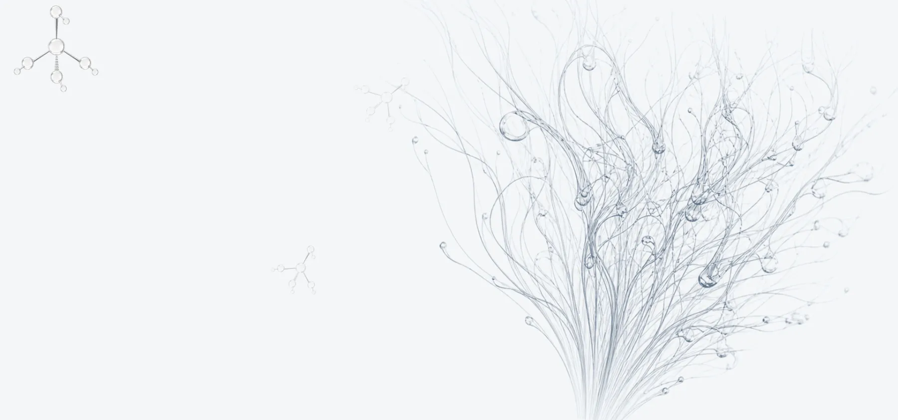

Featuresこの洗顔料の特長
01
もみ殻から取り出した植物由来のシリカ（ケイ素）を配合しています。 【要確認：配合量・原料の表記】
02
原料から製品までを自社の設備で管理しています。 【要確認：製造所の所在地・製造体制】
03
肌を清浄にし、うるおいを与える洗顔料です。朝晩どちらにもお使いいただけます。 【要確認：使用感・香り・テクスチャーの説明】
【要確認：実際の商品写真】 現在はイメージ写真を仮置きしています。
HUG+ BEAUTY の nano silica FACIAL CLEANSER は、 植物由来のナノシリカを配合した洗顔料です。 肌を清浄にし、うるおいを与えます。 【要確認：商品説明の本文】
How to use使い方
STEP1
【要確認：1回あたりの使用量】を手のひらに取ります。
STEP2
ぬるま湯を少しずつ加えて泡立て、顔全体をやさしく洗います。強くこすらないでください。
STEP3
ぬるま湯で洗い流します。洗い流したあとは、化粧水などで肌を整えてください。
※お肌に異常が生じていないかよく注意してご使用ください。 【要確認：使用上の注意の正式な文言】
Making原料と製造

もみ殻から取り出した植物由来のシリカを原料に使っています。 【要確認：製法の説明】
原料と製品について試験を行っています。 【要確認：実施している試験の名称と結果の公開範囲】

自社の設備で充填・仕上げまで行っています。 【要確認：製造工程・製造所の情報】
Q & Aよくある質問
Q. 朝も夜も使えますか。
A. はい、朝晩どちらにもお使いいただけます。
Q. メイクも落とせますか。
A. 【要確認：クレンジングとの併用可否】
Q. どのくらいの期間で使い切りますか。
A. 【要確認：使用量の目安と使用期間】
Q. 肌が弱くても使えますか。
A. お肌に合わない場合はご使用をおやめください。ご心配な場合は、事前にパッチテストをおすすめします。【要確認：正式な注意文言】
Orderご購入
【要確認：価格】
内容量：【要確認】／送料：【要確認】
カートに入れる【要確認：購入先のURL】 このボタンは現在このページ内を指しています。公開前に、実際のショップのURLに差し替えてください。